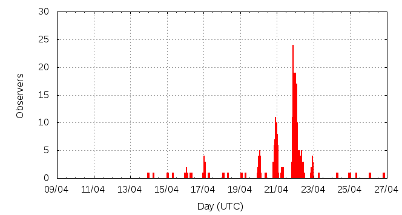

[ www.imo.net ]
This page shows automated results of the Lyrids 2012, based on visual observations reported by citizen scientists through the report form of the International Meteor Organization (IMO). The information on this page is generated automatically; for scientific use please refer to manual analyses published in scientific journals (such as WGN). Send your feedback regarding this page to Geert Barentsen.
Page contents:
Note that the data will finally go into the Visual Meteor Database (VMDB) with manual inspection and rectifications. We are curretly completing the files of 2008-2011. The VMDB is an enormous project - any help will be greatly appreciated.
Page generated: 2012 July 22 at 14:00 UTC.
The graph below shows the ZHR (Zenithal Hourly Rate), which is the number of meteors an observer would see under a very dark sky with the radiant of the shower in zenith.
ZHRmax = 37 based on 930 Lyrids reported in 285 intervals, assuming population index r = 2.1

| Time (UTC) | Solarlon | nINT | nLYR | ZHR | Particle density | |
|---|---|---|---|---|---|---|
| 2012-04-14 03:30 | 24.420 | 2 | 0 | 1 | ±1 | 1 / 109·km3 |
| 2012-04-15 05:59 | 25.501 | 3 | 2 | 3 | ±2 | 4 / 109·km3 |
| 2012-04-16 04:32 | 26.421 | 8 | 6 | 2 | ±1 | 3 / 109·km3 |
| 2012-04-17 03:13 | 27.346 | 9 | 11 | 2 | ±1 | 3 / 109·km3 |
| 2012-04-18 05:44 | 28.426 | 3 | 5 | 6 | ±2 | 9 / 109·km3 |
| 2012-04-19 05:59 | 29.413 | 4 | 2 | 2 | ±1 | 3 / 109·km3 |
| 2012-04-20 00:21 | 30.161 | 6 | 25 | 10 | ±2 | 14 / 109·km3 |
| 2012-04-20 03:40 | 30.296 | 8 | 23 | 9 | ±2 | 13 / 109·km3 |
| 2012-04-20 19:53 | 30.956 | 15 | 27 | 5 | ±1 | 7 / 109·km3 |
| 2012-04-20 23:23 | 31.098 | 10 | 21 | 5 | ±1 | 7 / 109·km3 |
| 2012-04-21 00:52 | 31.158 | 11 | 23 | 4 | ±1 | 6 / 109·km3 |
| 2012-04-21 07:20 | 31.421 | 8 | 20 | 8 | ±2 | 11 / 109·km3 |
| 2012-04-21 20:33 | 31.959 | 6 | 21 | 13 | ±3 | 19 / 109·km3 |
| 2012-04-21 21:34 | 32.000 | 26 | 59 | 14 | ±2 | 20 / 109·km3 |
| 2012-04-21 22:24 | 32.034 | 22 | 90 | 17 | ±2 | 24 / 109·km3 |
| 2012-04-21 23:25 | 32.075 | 18 | 81 | 18 | ±2 | 26 / 109·km3 |
| 2012-04-22 00:27 | 32.117 | 22 | 161 | 20 | ±2 | 29 / 109·km3 |
| 2012-04-22 01:24 | 32.156 | 29 | 175 | 23 | ±2 | 33 / 109·km3 |
| 2012-04-22 02:13 | 32.189 | 13 | 67 | 25 | ±3 | 36 / 109·km3 |
| 2012-04-22 05:24 | 32.319 | 16 | 20 | 20 | ±4 | 29 / 109·km3 |
| 2012-04-22 06:40 | 32.370 | 8 | 21 | 19 | ±4 | 27 / 109·km3 |
| 2012-04-22 08:14 | 32.434 | 11 | 23 | 10 | ±2 | 14 / 109·km3 |
| 2012-04-22 10:37 | 32.531 | 6 | 24 | 11 | ±2 | 16 / 109·km3 |
| 2012-04-22 22:13 | 33.002 | 9 | 17 | 6 | ±1 | 9 / 109·km3 |
| 2012-04-23 06:57 | 33.357 | 2 | 1 | 3 | ±2 | 4 / 109·km3 |
| 2012-04-24 12:40 | 34.563 | 3 | 2 | 4 | ±2 | 6 / 109·km3 |
| 2012-04-25 13:52 | 35.586 | 3 | 1 | 3 | ±2 | 4 / 109·km3 |
| 2012-04-26 02:07 | 36.083 | 3 | 0 | 6 | ±6 | 9 / 109·km3 |
| 2012-04-26 20:10 | 36.815 | 1 | 2 | 37 | ±21 | 53 / 109·km3 |
The reported intervals are automatically added together into the bins shown above, based on the number of meteors and the distribution of the intervals. For each bin, the following parameters are computed:
Data has been received from 54 observers in 21 countries. Thank you for your efforts!
Note: click on the map for an interactive version.

| Observer | Country | Teff | nLYR |
|---|---|---|---|
| Salvador Aguirre | Mexico | 2.70h | 13 |
| Jose Alvarellos | United States | 1.00h | 3 |
| Alexandre Amorim | Brazil | 3.55h | 12 |
| Rainer Arlt | Germany | 3.05h | 18 |
| Stela Arlt | Germany | 1.08h | 8 |
| Pierre Bader | Germany | 6.35h | 17 |
| Sara Belejova | Slovakia | 4.00h | 4 |
| Zora Beljic | Serbia | 2.50h | 27 |
| Ilie Cosovanu | Romania | 0.50h | 2 |
| Tibor Csörgei | Slovakia | 1.49h | 17 |
| Anderson Dantas | Brazil | 1.68h | 3 |
| Diego De Bastiani | Brazil | 1.80h | 10 |
| Sietse Dijkstra | Netherlands | 3.08h | 12 |
| Audrius Dubietis | Lithuania | 1.50h | 5 |
| Motahareh Ebrahimi | Iran | 1.08h | 4 |
| Frank Enzlein | Germany | 2.04h | 3 |
| Mihael Farkas | Serbia | 3.2h | 39 |
| Enzlein Frank | Germany | 2.33h | 23 |
| Vilem Heblik | Czech Republic | 7.75h | 47 |
| Karl Gauti Hjaltason | Iceland | 0.67h | 6 |
| Margarete Jacques Amorim | Brazil | 3.16h | 4 |
| Milada Jakubecova | Slovakia | 4.00h | 9 |
| Jane Houston Jones | United States | 4.08h | 36 |
| Zdenek Komarek | Slovakia | 4.00h | 6 |
| Ralf Koschack | Germany | 1.05h | 13 |
| Eva Laczko | Hungary | 2.83h | 11 |
| Anna Levina | Israel | 2.73h | 46 |
| Mike Linnolt | United States | 1.00h | 3 |
| Alexandr Maidik | Ukraine | 6.7h | 17 |
| Boris Majic | Serbia | 3.82h | 55 |
| Andjelka Milovanovic | Serbia | 3.74h | 42 |
| Damnjan Mili? | Serbia | 1.00h | 5 |
| Koen Miskotte | Netherlands | 2.89h | 1 |
| Maciej Myszkiewicz | Poland | 4.20h | 6 |
| Michal Palo | Slovakia | 4.00h | 6 |
| Jovana Pavlovic | Serbia | 2.50h | 22 |
| Krzysztof Pieszczoch | Poland | 1.00h | 1 |
| Ella Ratz | Israel | 2.70h | 38 |
| Clara Ricken | Germany | 1.88h | 14 |
| Terrence Ross | United States | 17.75h | 60 |
| Christian Schmiel | Germany | 3.68h | 33 |
| Stefan Schmeissner | Germany | 2.32h | 3 |
| Andrey Semenyuta | Kazakhstan | 1.40h | 2 |
| Andrzej Skoczewski | Poland | 2.92h | 23 |
| Katarina Skopalova | Slovakia | 4.00h | 1 |
| Richard Taibi | United States | 3.00h | 1 |
| Rushikesh Tilak | India | 1.00h | 7 |
| Christoph Gerber | Germany | 5.55h | 3 |
| Jakub Koukal | Czech Republic | 5.50h | 90 |
| Jurgen Rendtel | Germany | 6.84h | 22 |
| Michel Vandeputte | Belgium | 7.48h | 26 |
| Wienie Van Der Oord | Israel | 1.75h | 11 |
| Frank Waechter | Germany | 1.18h | 6 |
| Sabine Waechter | Germany | 1.48h | 2 |
| Thomas Weiland | Austria | 4.61h | 56 |
| Ilkka Yrjölä | Finland | 1.03h | 4 |
Create your own analysis. The files below can be opened using Excel:
lyr2012_rate.csv (number of meteors per interval per observer)
lyr2012_magn.csv (number of meteors per magnitude bin per observer)
The information on this page may be distributed freely provided credit is given to the International Meteor Organization (IMO) and, when possible, to the individual observers. The computer facilities to generate this page are provided by ESA/RSSD and Armagh Observatory.
References: